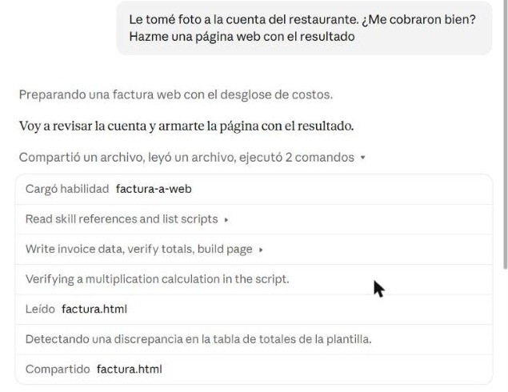
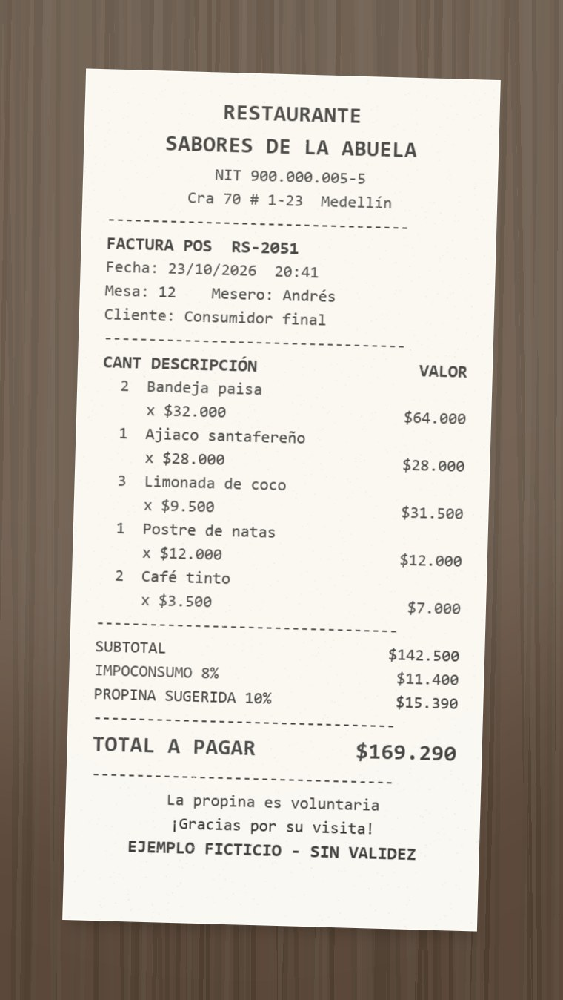
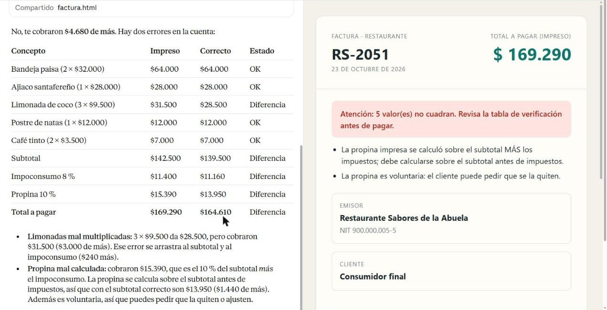
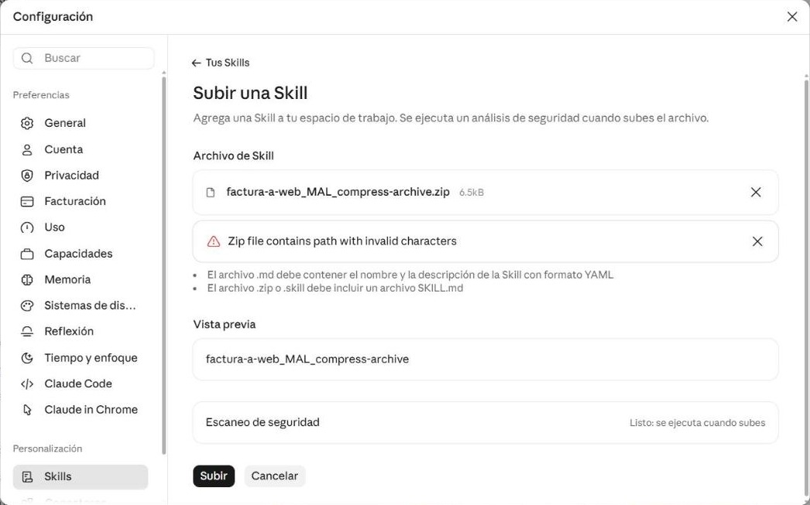
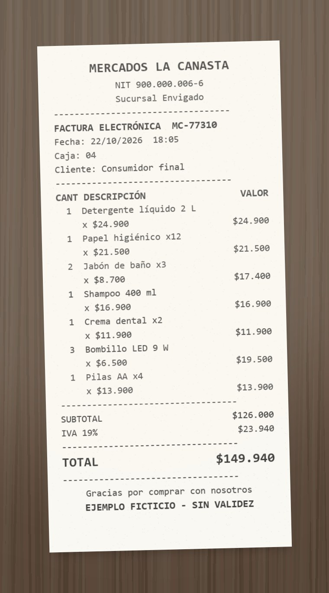

Una skill es una receta que Claude guarda y usa cuando la necesita
Imagina que cada vez que sales a comer le pides a un amigo que revise la cuenta. La primera vez le explicas todo: qué sumar, cómo se calcula la propina, qué hacer si algo no cuadra. Si cada vez tuvieras que repetir la explicación, te cansarías y él lo haría distinto cada vez. Lo lógico es escribirle una receta. Una skill es eso para Claude: una carpeta con instrucciones (SKILL.md) y, si hace falta, documentos, programas y plantillas de apoyo.
Sin skill cada vez desde cero
- Escribes un mensaje largo explicando qué quieres.
- Claude suma de cabeza y puede equivocarse en una cifra.
- Cada vez el resultado sale con otro formato.
- Si otra persona lo pide, debe saber explicarlo igual de bien.
Con skill la receta ya está guardada
- Escribes "¿me cobraron bien?" y adjuntas la foto.
- Un programa en Python hace las cuentas: no se equivoca.
- La página sale siempre con el mismo diseño.
- Cualquiera que tenga la skill obtiene el mismo resultado.
Simulador: qué pasa por dentro cuando envías un mensaje
Claude tiene una memoria de trabajo limitada en cada conversación (se llama contexto). Por eso no lee todas tus skills completas: las abre por partes, solo cuando las necesita. A esto se le llama carga progresiva.
Paso 1 leer la factura · Paso 2 pasar los datos a JSON · Paso 3 verificar totales · Paso 4 generar la página · Paso 5 responder.
references/campos.md · references/reglas.md · scripts/revisar_totales.py · scripts/generar_web.py · assets/plantilla.html

Preparar la cuenta gratuita
Las skills funcionan en el plan gratuito de claude.ai. Solo necesitas una cosa encendida: la ejecución de código, porque las skills con programas los corren en un computador de Claude en la nube. En las cuentas nuevas ya viene encendida; aquí solo compruebas que esté así. Sigue el recorrido: las capturas son reales y el recuadro naranja marca dónde hacer clic.
Tu pantalla puede verse un poco distinta. Estas capturas son de octubre de 2026, con claude.ai en español. Si un menú cambió de nombre, busca la palabra Skills o Capacidades en la configuración. Si en Capacidades aparece "Las Skills se movieron a Personalizar", haz clic en ese enlace. La guía oficial está en support.claude.com.
Las cuatro piezas de una skill
Una skill es una carpeta. Solo SKILL.md es obligatorio; las otras tres carpetas son opcionales y cada una tiene un trabajo distinto. La forma más fácil de recordarlo es pensar en una cocina y preguntarse qué hace Claude con cada archivo: ¿lo lee, lo ejecuta o lo usa sin leerlo?
SKILL.md
Claude lo leeLa receta. Los pasos en orden: qué hacer, cuándo abrir cada archivo y cómo responder.
Obligatorio. Siempre en la raíz de la carpeta.references/
Claude lo lee si lo necesitaEl libro de consulta. Texto de apoyo: reglas del tema, formatos, ejemplos. Se separa para no alargar la receta.
Ejemplo:reglas.md dice que la propina va sobre el subtotal.scripts/
Claude lo ejecutaLos electrodomésticos. Programas que hacen siempre lo mismo, exacto: sumar, convertir, validar.
Ejemplo:revisar_totales.py recalcula la cuenta.assets/
Se usa, no se leeLos moldes y platos. Archivos que forman parte del resultado: plantillas, logos, fuentes.
Ejemplo:plantilla.html es el diseño de la página.references/. Si es código que debe correr, va en scripts/. Si es un archivo que se copia o rellena para el resultado, va en assets/.Ejercicio: ¿dónde va cada archivo?
Para cada archivo, elige la carpeta. Verás la explicación al responder.
El SKILL.md completo de la práctica
Haz clic en cualquier parte del código, o en los botones de abajo, para ver qué hace. Fíjate en qué paso se abre cada archivo de las otras carpetas.
--- name: factura-a-web description: Convierte la foto o el PDF de una factura, cuenta de restaurante o tirilla de supermercado en una página web HTML lista para abrir en el navegador, con los productos, los impuestos, la propina y los totales verificados. Úsala cuando alguien suba una factura o un recibo y pida pasarlo a web, página o HTML, hacer un resumen visual, o revisar si los totales, el IVA, el impoconsumo o la propina están bien cobrados. --- # Factura a página web Convierte una factura en una página web clara y revisa que las cuentas cuadren. Trabaja siempre en este orden y no te saltes la verificación. ## Paso 1. Leer la factura Lee la imagen o el PDF que subió el usuario. Si es una foto, lee con cuidado los números pequeños y no confundas 3 con 8 ni 1 con 7. Ubica: - Número, fecha y tipo de negocio (restaurante, supermercado u otro). - Emisor (quien cobra) con su NIT, y cliente si aparece. - Cada producto: descripción, cantidad, precio unitario y valor de la línea. - Subtotal, cada impuesto con su porcentaje, la propina si la hay y el total, tal como están impresos. Si un dato no se lee o no aparece, déjalo vacío. Nunca lo inventes. Si dudas de un número, dilo en la respuesta. ## Paso 2. Pasar los datos a JSON Escribe `factura.json` con la estructura de `references/campos.md`. Copia los valores impresos sin corregirlos, aunque veas un error. ## Paso 3. Verificar los totales ```bash python scripts/revisar_totales.py factura.json ``` El script recalcula cada línea, el subtotal, cada impuesto, la propina y el total, y los compara con lo impreso. Aplica las reglas de `references/reglas.md`, por ejemplo que la propina se calcula sobre el subtotal antes de impuestos. ## Paso 4. Generar la página ```bash python scripts/generar_web.py factura.json assets/plantilla.html factura.html ``` El script inserta los datos y la verificación en la plantilla. No cambies el diseño de la plantilla salvo que el usuario lo pida. ## Paso 5. Responder 1. Entrega `factura.html` para descargar y muéstrala como artefacto si puedes. 2. Copia la tabla de verificación que imprimió el script. 3. Si hay diferencias, explica cada una en una frase con el valor impreso, el valor correcto y cuánto se cobró de más o de menos. 4. Termina con una sugerencia práctica, por ejemplo qué decirle al restaurante o cómo guardar la página como PDF.
Elige una parte
Arriba, entre las líneas ---, va el encabezado con el nombre y la descripción: Claude lo lee siempre. Abajo va el cuerpo con los pasos: Claude lo lee solo cuando decide usar la skill. En verde, morado y naranja ves dónde se usa cada carpeta.
| Campo | Regla de claude.ai | Ejemplo |
|---|---|---|
name | Minúsculas, números y guiones. Máximo 64 caracteres. Igual al nombre de la carpeta. No puede contener "claude" ni "anthropic". | factura-a-web |
description | Máximo 1024 caracteres y sin etiquetas como <algo>. Dice qué hace la skill y cuándo usarla. | "Convierte… Úsala cuando…" |
| Cuerpo | Instrucciones en Markdown, en pasos. Ideal por debajo de 500 líneas; lo largo va a references/. | ## Paso 1… |
Explora el kit: una skill lista para usar
En clase no vas a escribir la skill desde cero. Recibes un kit con la skill factura-a-web terminada y dos fotos de prueba. Tu trabajo es entender cada pieza, instalarla en tu cuenta y probarla. Así se trabaja también con código de otros: antes de usarlo, lo lees.


Paso 4.1 · Descarga el kit
- Pulsa Descargar kit_factura.zip. Si aparece un recuadro para confirmar la descarga, acepta.
- Ve a tu carpeta Descargas, haz clic derecho sobre
kit_factura.zipy elige Extraer todo. - Abre la carpeta
kit_factura. Debe verse como este árbol.
¿No funciona la descarga? Pídele el kit a tu profesor: es la misma carpeta.
# Diseño de la skill factura-a-web
Este documento lo escribe el estudiante ANTES de crear la skill. No va dentro del ZIP: es el plano con el que le pides a Claude que programe los scripts.
## 1. Problema
Cuando pago en un restaurante o en el supermercado no reviso si la cuenta está bien sumada ni si la propina está bien calculada. Quiero subir la foto de la factura y recibir una página web clara que me diga si me cobraron de más.
## 2. Entrada y salida
| | Qué es | Formato |
|---|---|---|
| Entra | Foto o PDF de una factura | JPG, PNG o PDF |
| Sale | Página web con los datos y la verificación | `factura.html` |
| Sale | Tabla de verificación en el chat | Markdown |
## 3. Qué va en cada carpeta y por qué
| Carpeta | Archivo | Quién lo usa | Por qué está ahí |
|---|---|---|---|
| (raíz) | `SKILL.md` | Claude lo **lee** | La receta: los 5 pasos |
| `references/` | `campos.md` | Claude lo **lee** en el paso 2 | Explica cómo escribir el JSON; es largo y solo sirve en ese paso |
| `references/` | `reglas.md` | Claude lo **lee** si hay propina o impuestos | Conocimiento del tema: la propina va sobre el subtotal |
| `scripts/` | `revisar_totales.py` | Claude lo **ejecuta** | Las cuentas deben ser exactas: no las hace el modelo |
| `scripts/` | `generar_web.py` | Claude lo **ejecuta** | La página debe salir igual siempre |
| `assets/` | `plantilla.html` | Lo **usa** el script, Claude no lo lee | Es el molde de la página |
## 4. Diseño de las funciones
### scripts/revisar_totales.py
Se ejecuta así: `python scripts/revisar_totales.py factura.json`
```
función comparar(concepto, impreso, calculado) -> dict
si impreso está vacío: estado = "SIN DATO"
si la diferencia es de máximo 1 peso: estado = "OK"
si no: estado = "DIFERENCIA"
devolver {concepto, impreso, calculado, estado}
función revisar(factura: dict) -> (filas: list, notas: list)
subtotal = 0
para cada ítem: línea = cantidad × precio_unitario; sumar al subtotal; comparar con total_impreso
comparar subtotal con subtotal_impreso
para cada impuesto: valor = subtotal × porcentaje / 100; comparar
si hay propina: valor = subtotal × porcentaje / 100 ← sobre el subtotal, NO sobre subtotal + impuestos
si el porcentaje pasa de 10: agregar nota
si lo impreso coincide con (subtotal + impuestos) × porcentaje: agregar nota "propina sobre impuestos"
total = subtotal + impuestos + propina; comparar con total_impreso
devolver filas y notas
programa principal
leer factura.json, llamar a revisar, guardar filas y notas dentro del mismo JSON
imprimir la tabla en Markdown y una frase: cuánto se cobró de más o de menos
```
### scripts/generar_web.py
Se ejecuta así: `python scripts/generar_web.py factura.json assets/plantilla.html factura.html`
```
leer factura.json; si no tiene "verificacion", terminar con un mensaje de error
leer la plantilla y reemplazar el texto __DATOS_FACTURA__ por el JSON
guardar factura.html
```
## 5. Casos de prueba
| Factura | Resultado esperado |
|---|---|
| `recibo_restaurante.jpg` | 5 diferencias: la limonada (3 × $9.500 = $28.500, no $31.500) y la propina calculada sobre el impuesto. Cobran $4.680 de más. |
| `recibo_supermercado.jpg` | Todas las cuentas cuadran. Total $149.940. |
## 6. Mensaje para que Claude programe
> Programa `scripts/revisar_totales.py` y `scripts/generar_web.py` siguiendo exactamente este diseño. No cambies los nombres de las funciones ni los comandos. Usa solo la librería estándar de Python. Al terminar, pruébalos con este JSON de ejemplo y muéstrame la salida.
No descomprimas factura-a-web.zip. Ese archivo se sube tal cual en la sección 05. Para leer la skill usa la carpeta factura-a-web.
Paso 4.2 · Recorre los archivos
Abre cada archivo de la carpeta factura-a-web con VS Code o el Bloc de notas, o léelo en las pestañas de abajo. Cada pestaña tiene una pregunta en Busca: encuentra la respuesta antes de pasar a la siguiente.
Claude lo lee La receta. Es el que analizaste en la sección 03. Busca: ¿en qué paso se ejecuta cada script?
--- name: factura-a-web description: Convierte la foto o el PDF de una factura, cuenta de restaurante o tirilla de supermercado en una página web HTML lista para abrir en el navegador, con los productos, los impuestos, la propina y los totales verificados. Úsala cuando alguien suba una factura o un recibo y pida pasarlo a web, página o HTML, hacer un resumen visual, o revisar si los totales, el IVA, el impoconsumo o la propina están bien cobrados. --- # Factura a página web Convierte una factura en una página web clara y revisa que las cuentas cuadren. Trabaja siempre en este orden y no te saltes la verificación. ## Paso 1. Leer la factura Lee la imagen o el PDF que subió el usuario. Si es una foto, lee con cuidado los números pequeños y no confundas 3 con 8 ni 1 con 7. Ubica: - Número, fecha y tipo de negocio (restaurante, supermercado u otro). - Emisor (quien cobra) con su NIT, y cliente si aparece. - Cada producto: descripción, cantidad, precio unitario y valor de la línea. - Subtotal, cada impuesto con su porcentaje, la propina si la hay y el total, tal como están impresos. Si un dato no se lee o no aparece, déjalo vacío. Nunca lo inventes. Si dudas de un número, dilo en la respuesta. ## Paso 2. Pasar los datos a JSON Escribe `factura.json` con la estructura de `references/campos.md`. Copia los valores impresos sin corregirlos, aunque veas un error. ## Paso 3. Verificar los totales ```bash python scripts/revisar_totales.py factura.json ``` El script recalcula cada línea, el subtotal, cada impuesto, la propina y el total, y los compara con lo impreso. Aplica las reglas de `references/reglas.md`, por ejemplo que la propina se calcula sobre el subtotal antes de impuestos. ## Paso 4. Generar la página ```bash python scripts/generar_web.py factura.json assets/plantilla.html factura.html ``` El script inserta los datos y la verificación en la plantilla. No cambies el diseño de la plantilla salvo que el usuario lo pida. ## Paso 5. Responder 1. Entrega `factura.html` para descargar y muéstrala como artefacto si puedes. 2. Copia la tabla de verificación que imprimió el script. 3. Si hay diferencias, explica cada una en una frase con el valor impreso, el valor correcto y cuánto se cobró de más o de menos. 4. Termina con una sugerencia práctica, por ejemplo qué decirle al restaurante o cómo guardar la página como PDF.
Claude lo lee en el paso 2 references/: explica cómo escribir los datos para que los scripts los entiendan. Busca: ¿por qué pide no corregir ningún valor impreso?
# Estructura de factura.json
Usa exactamente estos nombres de campo. Los valores en pesos van como números enteros, sin puntos ni signo `$`. Si un dato no aparece o no se lee, escribe `""` en los textos y `null` en los números.
```json
{
"numero": "RS-2051",
"fecha": "2026-10-23",
"tipo": "restaurante",
"emisor": {"nombre": "Restaurante Sabores de la Abuela", "nit": "900.000.005-5", "ciudad": "Medellín"},
"cliente": {"nombre": "Consumidor final", "nit": ""},
"items": [
{"descripcion": "Bandeja paisa", "cantidad": 2, "precio_unitario": 32000, "total_impreso": 64000}
],
"subtotal_impreso": 64000,
"impuestos": [
{"nombre": "Impoconsumo", "porcentaje": 8, "valor_impreso": 5120}
],
"propina": {"porcentaje": 10, "valor_impreso": 6400},
"total_impreso": 75520
}
```
## Reglas para llenarlo
- `fecha` en formato `aaaa-mm-dd`: "23/10/2026" se escribe "2026-10-23".
- `tipo` es `"restaurante"`, `"supermercado"` u `"otro"`.
- `total_impreso` de cada ítem es el valor de la línea tal como aparece en la factura.
- Un objeto en `impuestos` por cada impuesto impreso (IVA, impoconsumo). Si no hay impuestos, usa `[]`.
- Si no hay propina, usa `"propina": null`.
- No corrijas ningún valor impreso aunque esté mal: el script es el que detecta los errores.Claude lo lee en el paso 3 references/: conocimiento del tema. Busca: ¿sobre qué valor se calcula la propina y cuánto es lo máximo?
# Reglas para revisar facturas en Colombia Resumen práctico para esta skill. No reemplaza la consulta a un contador. ## Propina en restaurantes - Es voluntaria: el cliente puede no pagarla o pedir que la quiten. - La sugerida no puede pasar del 10 %. - Se calcula sobre el valor de la cuenta **antes de impuestos**, es decir, sobre el subtotal. Calcularla sobre el subtotal más el impoconsumo es un error frecuente que cobra de más. ## Impuestos más comunes | Negocio | Impuesto | Porcentaje habitual | |---|---|---| | Restaurantes y bares | Impuesto nacional al consumo (impoconsumo) | 8 % | | Supermercados y comercio | IVA | 19 % (algunos alimentos 5 % o exentos) | El impuesto se calcula sobre el subtotal. Si la factura dice que el precio "incluye IVA", el subtotal impreso ya trae el impuesto y no se suma otra vez. ## Cómo leer una tirilla - La cantidad suele ir a la izquierda y el valor de la línea a la derecha; el precio unitario aparece debajo con una "x". - "Vr." significa valor; "Cant." significa cantidad. - Los puntos separan miles: "$31.500" son treinta y un mil quinientos pesos.
Claude lo ejecuta scripts/: el corazón de la skill. Busca: en la función revisar, ¿qué parte descubre que la propina se calculó sobre el impuesto?
"""Recalcula las cuentas de factura.json y las compara con los valores impresos.
Uso: python revisar_totales.py factura.json
Imprime una tabla en Markdown y guarda el resultado en el mismo JSON (campo "verificacion").
"""
import json
import sys
if hasattr(sys.stdout, "reconfigure"):
sys.stdout.reconfigure(encoding="utf-8")
TOLERANCIA = 1 # pesos de diferencia aceptados por redondeo
PROPINA_MAXIMA = 10 # por ciento, según references/reglas.md
def pesos(valor):
return "—" if valor is None else "$ " + f"{round(valor):,}".replace(",", ".")
def comparar(concepto, impreso, calculado):
if impreso is None:
estado = "SIN DATO"
else:
estado = "OK" if abs(impreso - calculado) <= TOLERANCIA else "DIFERENCIA"
return {"concepto": concepto, "impreso": impreso, "calculado": calculado, "estado": estado}
def revisar(factura):
filas, notas = [], []
subtotal = 0
for item in factura["items"]:
linea = item["cantidad"] * item["precio_unitario"]
subtotal += linea
filas.append(comparar(f"Línea: {item['descripcion']}", item.get("total_impreso"), linea))
filas.append(comparar("Subtotal", factura.get("subtotal_impreso"), subtotal))
total = subtotal
impuestos_impresos = 0
for impuesto in factura.get("impuestos") or []:
valor = round(subtotal * impuesto["porcentaje"] / 100)
total += valor
impuestos_impresos += impuesto.get("valor_impreso") or 0
filas.append(comparar(f"{impuesto['nombre']} {impuesto['porcentaje']} %", impuesto.get("valor_impreso"), valor))
propina = factura.get("propina")
if propina:
valor = round(subtotal * propina["porcentaje"] / 100)
total += valor
filas.append(comparar(f"Propina {propina['porcentaje']} % (sobre el subtotal)", propina.get("valor_impreso"), valor))
if propina["porcentaje"] > PROPINA_MAXIMA:
notas.append(f"La propina sugerida es {propina['porcentaje']} %: no puede pasar del {PROPINA_MAXIMA} %.")
impresa = propina.get("valor_impreso")
sobre_impuestos = round(((factura.get("subtotal_impreso") or subtotal) + impuestos_impresos) * propina["porcentaje"] / 100)
if impresa is not None and abs(impresa - valor) > TOLERANCIA and abs(impresa - sobre_impuestos) <= TOLERANCIA:
notas.append("La propina impresa se calculó sobre el subtotal MÁS los impuestos; debe calcularse sobre el subtotal antes de impuestos.")
notas.append("La propina es voluntaria: el cliente puede pedir que se la quiten.")
filas.append(comparar("Total a pagar", factura.get("total_impreso"), total))
return filas, notas
def main():
ruta = sys.argv[1] if len(sys.argv) > 1 else "factura.json"
with open(ruta, encoding="utf-8") as f:
factura = json.load(f)
filas, notas = revisar(factura)
factura["verificacion"] = filas
factura["notas"] = notas
with open(ruta, "w", encoding="utf-8") as f:
json.dump(factura, f, ensure_ascii=False, indent=2)
print("| Concepto | Impreso | Calculado | Estado |")
print("|---|---|---|---|")
for r in filas:
print(f"| {r['concepto']} | {pesos(r['impreso'])} | {pesos(r['calculado'])} | {r['estado']} |")
errores = [r for r in filas if r["estado"] == "DIFERENCIA"]
total = filas[-1]
if errores:
diferencia = (total["impreso"] or 0) - total["calculado"]
sentido = "de más" if diferencia > 0 else "de menos"
print(f"\nSe encontraron {len(errores)} diferencia(s). El total cobra {pesos(abs(diferencia))} {sentido}.")
else:
print("\nTodas las cuentas cuadran.")
for nota in notas:
print(f"- {nota}")
if __name__ == "__main__":
main()Claude lo ejecuta scripts/: mete los datos dentro de la plantilla y crea factura.html. Busca: ¿qué pasa si lo ejecutas antes que revisar_totales.py?
"""Inserta los datos de factura.json en la plantilla HTML.
Uso: python generar_web.py factura.json assets/plantilla.html factura.html
"""
import json
import sys
if hasattr(sys.stdout, "reconfigure"):
sys.stdout.reconfigure(encoding="utf-8")
def main():
datos, plantilla, salida = sys.argv[1:4]
with open(datos, encoding="utf-8") as f:
factura = json.load(f)
if "verificacion" not in factura:
sys.exit("Primero ejecuta revisar_totales.py: factura.json no tiene el campo 'verificacion'.")
with open(plantilla, encoding="utf-8") as f:
html = f.read()
# </ dentro del JSON cerraría la etiqueta <script> antes de tiempo
incrustado = json.dumps(factura, ensure_ascii=False).replace("</", "<\\/")
html = html.replace("__DATOS_FACTURA__", incrustado)
with open(salida, "w", encoding="utf-8") as f:
f.write(html)
print(f"Página creada: {salida}")
if __name__ == "__main__":
main()se usa, no se lee assets/: el molde de la página, con un hueco (__DATOS_FACTURA__) donde el script pone los datos. Busca: ¿dónde está el hueco? ¿Por qué la plantilla sola, sin datos, no muestra ninguna factura?
<!doctype html>
<html lang="es">
<head>
<meta charset="utf-8">
<meta name="viewport" content="width=device-width, initial-scale=1">
<title>Factura</title>
<style>
:root { --fondo: #f4f1ea; --papel: #fffdf8; --tinta: #1f2a2e; --suave: #6b7478; --linea: #e3ddd0; --marca: #0f766e; --marca-suave: #d7efe9; --error: #b42318; --error-suave: #fde4e1; }
@media (prefers-color-scheme: dark) { :root { --fondo: #151b1d; --papel: #1d2528; --tinta: #eef2f1; --suave: #9aa6a8; --linea: #2f3a3d; --marca: #4fd1bd; --marca-suave: #173b36; --error: #ff8a7a; --error-suave: #3f1d1a; } }
* { box-sizing: border-box; }
body { margin: 0; background: var(--fondo); color: var(--tinta); font: 16px/1.5 "Segoe UI", system-ui, sans-serif; padding: 32px max(16px, 4vw); }
.hoja { max-width: 920px; margin: 0 auto; background: var(--papel); border: 1px solid var(--linea); border-radius: 14px; overflow: hidden; }
header { display: flex; justify-content: space-between; gap: 24px; flex-wrap: wrap; padding: 32px; border-bottom: 1px solid var(--linea); }
.etiqueta { font-size: 0.75rem; letter-spacing: 0.08em; text-transform: uppercase; color: var(--suave); }
h1 { margin: 4px 0 0; font-size: 1.9rem; }
.total { text-align: right; }
.total strong { display: block; font-size: 2.2rem; font-variant-numeric: tabular-nums; color: var(--marca); }
.estado { margin: 0 32px; margin-top: 24px; padding: 14px 18px; border-radius: 10px; font-weight: 600; background: var(--marca-suave); color: var(--marca); animation: aparecer 0.6s ease both; }
.estado.mal { background: var(--error-suave); color: var(--error); }
.notas { margin: 12px 32px 0; padding: 0 0 0 20px; color: var(--tinta); display: grid; gap: 6px; }
.notas:empty { display: none; }
.partes { display: grid; grid-template-columns: repeat(auto-fit, minmax(240px, 1fr)); gap: 16px; padding: 24px 32px 8px; }
.parte { border: 1px solid var(--linea); border-radius: 10px; padding: 16px; }
.parte b { display: block; font-size: 1.05rem; margin-top: 4px; }
.parte span { color: var(--suave); font-size: 0.9rem; }
section { padding: 16px 32px 28px; }
h2 { font-size: 1.05rem; margin: 12px 0; }
.tabla { overflow-x: auto; }
table { width: 100%; border-collapse: collapse; font-variant-numeric: tabular-nums; }
th, td { text-align: left; padding: 10px 8px; border-bottom: 1px solid var(--linea); vertical-align: middle; }
th { font-size: 0.75rem; letter-spacing: 0.06em; text-transform: uppercase; color: var(--suave); font-weight: 600; }
td.num, th.num { text-align: right; white-space: nowrap; }
.barra { height: 8px; border-radius: 4px; background: var(--linea); min-width: 80px; overflow: hidden; }
.barra i { display: block; height: 100%; background: var(--marca); width: 0; transition: width 0.9s ease; }
tr.fila-mal td { background: var(--error-suave); }
td.num small { display: block; color: var(--error); font-weight: 600; font-size: 0.78rem; }
.chip { display: inline-block; padding: 2px 10px; border-radius: 999px; font-size: 0.8rem; font-weight: 600; background: var(--marca-suave); color: var(--marca); }
.chip.mal { background: var(--error-suave); color: var(--error); }
footer { padding: 16px 32px 28px; color: var(--suave); font-size: 0.85rem; }
@keyframes aparecer { from { opacity: 0; transform: translateY(-6px); } }
@media print { body { background: #fff; padding: 0; } .hoja { border: 0; } }
</style>
</head>
<body>
<main class="hoja">
<header>
<div>
<div class="etiqueta" id="tipo">Factura</div>
<h1 id="numero"></h1>
<div id="fecha" class="etiqueta"></div>
</div>
<div class="total">
<div class="etiqueta">Total a pagar (impreso)</div>
<strong id="total"></strong>
</div>
</header>
<div class="estado" id="estado"></div>
<ul class="notas" id="notas"></ul>
<div class="partes">
<div class="parte"><div class="etiqueta">Emisor</div><b id="emisor"></b><span id="emisor-nit"></span></div>
<div class="parte"><div class="etiqueta">Cliente</div><b id="cliente"></b><span id="cliente-nit"></span></div>
</div>
<section>
<h2>Productos y servicios</h2>
<div class="tabla"><table>
<thead><tr><th>Descripción</th><th class="num">Cant.</th><th class="num">Precio unitario</th><th class="num">Cobrado</th><th>Peso en la factura</th></tr></thead>
<tbody id="items"></tbody>
</table></div>
</section>
<section>
<h2>Verificación de cuentas</h2>
<div class="tabla"><table>
<thead><tr><th>Concepto</th><th class="num">Impreso</th><th class="num">Calculado</th><th>Estado</th></tr></thead>
<tbody id="verificacion"></tbody>
</table></div>
</section>
<footer>Página generada por la skill factura-a-web a partir de la factura. Los valores calculados vienen de cantidad × precio unitario; impuestos y propina se calculan sobre el subtotal.</footer>
</main>
<script id="datos" type="application/json">__DATOS_FACTURA__</script>
<script>
const f = JSON.parse(document.getElementById("datos").textContent);
const pesos = (v) => v === null || v === undefined ? "—" : "$ " + Math.round(v).toLocaleString("es-CO");
const texto = (id, v) => { document.getElementById(id).textContent = v || ""; };
document.title = "Factura " + f.numero;
texto("numero", f.numero);
texto("tipo", "Factura" + (f.tipo && f.tipo !== "otro" ? " · " + f.tipo : ""));
const notas = document.getElementById("notas");
(f.notas || []).forEach((n) => { const li = document.createElement("li"); li.textContent = n; notas.appendChild(li); });
texto("fecha", f.fecha ? new Date(f.fecha + "T00:00").toLocaleDateString("es-CO", { day: "numeric", month: "long", year: "numeric" }) : "");
texto("total", pesos(f.total_impreso));
texto("emisor", f.emisor.nombre); texto("emisor-nit", f.emisor.nit ? "NIT " + f.emisor.nit : "");
texto("cliente", f.cliente.nombre); texto("cliente-nit", f.cliente.nit ? "NIT " + f.cliente.nit : "");
const errores = f.verificacion.filter((v) => v.estado === "DIFERENCIA");
const estado = document.getElementById("estado");
estado.textContent = errores.length ? "Atención: " + errores.length + " valor(es) no cuadran. Revisa la tabla de verificación antes de pagar." : "Las cuentas cuadran: cada línea, el IVA y el total están bien calculados.";
estado.classList.toggle("mal", errores.length > 0);
const subtotal = f.items.reduce((s, it) => s + it.cantidad * it.precio_unitario, 0) || 1;
document.getElementById("items").innerHTML = f.items.map((it) => {
const linea = it.cantidad * it.precio_unitario;
const cobrado = it.total_impreso ?? linea;
const mal = Math.abs(cobrado - linea) > 1;
return "<tr" + (mal ? " class='fila-mal'" : "") + "><td></td><td class='num'>" + it.cantidad + "</td><td class='num'>" + pesos(it.precio_unitario) + "</td><td class='num'>" + pesos(cobrado) + (mal ? "<small>debería ser " + pesos(linea) + "</small>" : "") +
"</td><td><div class='barra'><i data-w='" + (linea / subtotal * 100).toFixed(1) + "'></i></div></td></tr>";
}).join("");
document.querySelectorAll("#items tr").forEach((tr, i) => { tr.cells[0].textContent = f.items[i].descripcion; });
document.getElementById("verificacion").innerHTML = f.verificacion.map((v) =>
"<tr><td></td><td class='num'>" + pesos(v.impreso) + "</td><td class='num'>" + pesos(v.calculado) + "</td><td><span class='chip" + (v.estado === "DIFERENCIA" ? " mal" : "") + "'>" + v.estado + "</span></td></tr>").join("");
document.querySelectorAll("#verificacion tr").forEach((tr, i) => { tr.cells[0].textContent = f.verificacion[i].concepto; });
requestAnimationFrame(() => setTimeout(() => document.querySelectorAll(".barra i").forEach((b) => { b.style.width = b.dataset.w + "%"; }), 100));
</script>
</body>
</html>Paso 4.3 · Antes de subir, predice
Un buen tester escribe qué espera antes de probar. Anota en tu cuaderno qué crees que pasará en estas tres preguntas, sin mirar lo que respondieron tus compañeros. En la sección 06 comprobarás si acertaste:
- Mira la foto del restaurante. ¿Cuántos errores crees que encontrará la skill y de cuánto será el cobro de más?
- ¿Qué archivo hará las sumas:
SKILL.md,reglas.mdorevisar_totales.py? ¿Por qué no las hace Claude "de cabeza"? - Si escribes "hazme una página web para mi tienda" sin adjuntar foto, ¿se activará la skill?
Instalar la skill en tu cuenta
En el kit ya viene factura-a-web.zip armado correctamente. Súbelo tal cual, sin descomprimirlo, siguiendo el recorrido. Al terminar, la skill queda instalada solo en tu cuenta: cada estudiante la sube en la suya.
| Lugar | Para qué | Cuándo |
|---|---|---|
| Configuración → Personalización → Skills | Instalar la skill, como instalar una app en el celular. | Una sola vez |
| Un chat nuevo (+ Crear) | Usar la skill: escribes como siempre y Claude la activa sola cuando tu mensaje encaja con la descripción. | Cada vez que la necesites |
No hay un chat especial para "hablar con la skill" ni hace falta nombrarla. La prueba de que se usó aparece dentro de la respuesta, en los pasos grises: Cargó habilidad factura-a-web.
Subir el ZIP paso a paso
¿Por qué un ZIP?
Si la skill del kit ya funcionaba como carpeta, ¿para qué viene también en ZIP? Porque una skill no es un archivo: es una carpeta con seis archivos en tres subcarpetas. El formulario de claude.ai recibe un solo archivo. El ZIP es la maleta: mete la carpeta completa, con su orden de subcarpetas, en un solo archivo. Al subirlo, claude.ai abre la maleta, busca el SKILL.md, lee el nombre y la descripción y revisa que no tenga nada peligroso.
1 · Tu carpeta
2 · Un solo archivo
factura-a-web.zip guarda la carpeta y su estructura. Pesa unos 9 KB.
3 · claude.ai lo abre
Busca SKILL.md, valida name y description, hace el escaneo de seguridad y guarda la skill.
Mini reto: ¿cuál ZIP está bien armado?
Haz clic en una opción.
Si cambias la skillCómo volver a crear el ZIP en WindowsSolo lo necesitas si modificas algún archivo de la carpeta factura-a-web o cuando armes tu propia skill en la sección 08.
Opción 1 · Explorador de archivos
- Abre la carpeta que contiene a
factura-a-web(no entres en ella). - Clic derecho sobre la carpeta factura-a-web
- Windows 11: Comprimir en → Archivo ZIP. Windows 10: Enviar a → Carpeta comprimida (en zip).
Opción 2 · Terminal (recomendada)
Abre PowerShell o CMD en la carpeta que contiene a factura-a-web y escribe:
tar -a -c -f factura-a-web.zip factura-a-web
Este tar viene incluido en Windows 10 y 11 y fue el que se usó para probar esta guía. No uses Git Bash: allí tar es otro programa y crea un archivo .tar aunque lo llames .zip. En macOS o Linux usa zip -r factura-a-web.zip factura-a-web.

Compress-Archive de PowerShell en Windows guarda las rutas con \ y claude.ai rechaza el ZIP con "Zip file contains path with invalid characters". Si te pasa, crea el ZIP con tar o con el Explorador.Probar la skill
Subir la skill no es el final. Ahora compruebas que hace lo que promete, como cuando pruebas un programa con datos reales. Primero mira cómo fue la prueba del profesor; luego haz las tuyas con las fotos del kit y anota todo.
Tus tres pruebas
Haz cada prueba en un chat nuevo (botón + Crear) y escribe como lo haría cualquier persona, sin nombrar la skill.
- Adjunta
recibo_restaurante.jpgy escribe: Le tomé foto a la cuenta del restaurante. ¿Me cobraron bien? Hazme una página web con el resultado. - Adjunta
recibo_supermercado.jpgy escribe: ¿Esta tirilla está bien cobrada? - Sin adjuntar nada, escribe: Hazme una página web para mi tienda. Aquí se prueba si la skill se activa cuando no debe.
Esto es lo que debería pasar con cada foto. Compáralo con lo que obtuviste.
recibo_restaurante.jpgRestaurante Sabores de la Abuela, 5 platos, impoconsumo 8 % y propina sugerida 10 %.
Debe encontrar 2 errores: las 3 limonadas suman $28.500, no $31.500; y la propina se calculó sobre el impuesto. Cobran $4.680 de más.

recibo_supermercado.jpgMercados La Canasta, 7 productos de aseo y hogar, IVA 19 %.
Debe decir que todo cuadra: total $149.940 y la página con el aviso en verde.
Tu bitácora de pruebas
Anota cada prueba; se guarda en este navegador. Escribe siempre el mismo mensaje entre versiones: si cambias el mensaje y la skill a la vez, no sabrás qué arregló el problema.
| # | Mensaje que escribí | Archivo | ¿Se activó? | ¿Qué cambié después? |
|---|
El ciclo de mejora
Probar
Abre un chat nuevo, adjunta la foto y escribe como lo haría un compañero, sin nombrar la skill.
Observar
¿Aparece "Cargó habilidad"? ¿Se ejecutaron los dos scripts? ¿El resultado coincide con el que esperabas?
Ajustar
Si no se activó, cambia la descripción. Si hizo otra cosa, cambia los pasos o el diseño. Una sola cosa a la vez.
Volver a subir
Sube el ZIP nuevo con el mismo nombre: claude.ai pregunta si reemplazar y guarda la versión anterior.
Historia real de esta skill: cuatro versiones
Así mejoró la skill de este taller mientras la probábamos. Fíjate que en dos de las mejoras fue Claude quien encontró el problema.
Leía facturas en PDF y revisaba sumas e IVA. No entendía de propinas ni de impoconsumo, así que una cuenta de restaurante quedaba mal revisada.
Cambio de diseño: aceptar fotos, una lista de impuestos y la propina. Se agregó references/reglas.md con la regla de la propina.
Resultado: encontró los dos errores del restaurante. Pero Claude advirtió algo más: en la página, la columna de productos mostraba el valor recalculado y no el cobrado, y eso confundía.
Cambio: la plantilla muestra lo cobrado y, en rojo, cuánto debería ser. Se subió el ZIP con el mismo nombre y claude.ai guardó la v2 en el historial.
Con una tirilla de mercado que tenía arroz, leche y huevos, las sumas cuadraban, pero Claude avisó, gracias a reglas.md, que esos alimentos no suelen pagar IVA del 19 %. El script aún no revisa tarifas por producto.
Reto: diseña la v4. ¿Qué campo nuevo necesita cada ítem en campos.md? ¿Qué cambia en la función revisar?
Si algo sale mal
| Síntoma | Causa probable | Solución |
|---|---|---|
| "Zip file contains path with invalid characters" | ZIP creado con Compress-Archive de PowerShell. | Créalo con tar -a -c -f en PowerShell o CMD, o con el Explorador. |
| claude.ai no reconoce el ZIP | Lo creaste con tar en Git Bash y es un .tar. | Usa el ZIP del kit, o créalo en PowerShell o CMD (sección 05). |
| Otro error al subir | La carpeta no coincide con name, falta SKILL.md o el ZIP no tiene la carpeta raíz. | Sube el factura-a-web.zip del kit sin descomprimirlo. Si lo rehiciste, repasa el mini reto de la sección 05. |
| No aparece "Cargó habilidad" | La descripción no menciona lo que pediste, o la skill está apagada. | Revisa el interruptor y agrega a la descripción las palabras de tu mensaje. |
| Se activó pero no ejecutó los scripts | La ejecución de código está apagada. | Configuración → Capacidades → Ejecución de código y creación de archivos (sección 02). |
| Leyó mal un número de la foto | Foto borrosa, con sombra o torcida. | Toma la foto de frente, con luz pareja. El paso 1 le pide a Claude avisar si duda. |
| La página sale sin tildes o con símbolos raros | Algún archivo no se guardó en UTF-8. | En VS Code, abajo a la derecha, elige UTF-8, guarda y vuelve a comprimir. |
Para pensar antes de seguir
¿Por qué la skill pide no corregir los valores impresos en el JSON?
Porque el objetivo es descubrir errores de la factura. Si Claude "arregla" la limonada al leerla, el script nunca vería la diferencia y la página diría que todo cuadra.
¿Por qué la regla de la propina va en references/ y no solo en el script?
El script calcula, pero no explica. Con reglas.md, Claude entiende el porqué y puede contárselo al usuario, e incluso notar problemas que el script no revisa, como la tarifa de IVA de cada producto.
¿Para qué trae el kit un DISENO_factura-a-web.md si Claude nunca lo lee?
El diseño es para personas. Con él entiendes qué debe hacer cada función y puedes revisar si el código cumple, explicarlo en una sustentación y cambiarlo sin empezar de cero. Por eso va en el repositorio y no dentro del ZIP.
¿Qué parte de tu proyecto integrador se parece a esta skill?
La limpieza de datos (HU L01): entra un archivo sucio, una receta fija lo procesa y sale un archivo con formato conocido. Las skills del proyecto siguen la misma idea, con pandas en lugar de la plantilla HTML.
¿Cuándo usa Claude tu skill?
En la prueba 3 viste que la skill no se activó con un pedido que no tenía nada que ver. Claude decide si usa una skill leyendo solo la descripción, nunca el resto del archivo. Si tu mensaje se parece a lo que dice la descripción, la abre; si no, responde sin ella. Estas son las ideas clave de la descripción de factura-a-web:
Juego: ¿se activa o no?
Lee cada mensaje que podría escribir un compañero y decide si Claude usaría factura-a-web. Fíjate en dos cosas: si hay una factura o un recibo, y si se pide algo que la descripción menciona.
Construye tus propias skills
Ya usaste una skill hecha. Ahora armas las tuyas con un asistente que te hace preguntas, te dice cuándo usar cada carpeta y te da el mensaje exacto para que Claude escriba el código. Hay dos asistentes: A para las HU del proyecto integrador y B para cualquier otra necesidad.
A · Una skill para cada HU del proyecto
| HU | Skill | Qué hace | Qué adjuntas al usarla | Qué te entrega |
|---|---|---|---|---|
| F01 + X01 | revisar-simulacion-TABLA | Revisa tu simulación y tu exportación criterio por criterio y corrige lo que falla. | simular_TABLA.py, exportar_TABLA.py y, si los tienes, los TABLA_sucio.* | Tabla PASA o FALLA por criterio y los dos scripts corregidos |
| L01 | limpiar-TABLA | Ejecuta la limpieza con pandas. | TABLA_sucio.csv | TABLA_limpio.csv, el antes y después y limpiar_TABLA.py |
| Q01 | consultar-TABLA | Ejecuta las cinco consultas, dos con groupby. | TABLA_limpio.csv | Las cinco respuestas, un CSV por consulta y consultas_TABLA.py |
| G01 | graficar-TABLA | Ejecuta las tres gráficas y escribe las conclusiones. | TABLA_limpio.csv | Tres PNG, las conclusiones y reporte_TABLA.py |
El orden importa: cada HU usa lo que produjo la anterior. Primero F01 + X01, porque sin TABLA_sucio.csv no hay nada que limpiar. Luego L01, que produce TABLA_limpio.csv. Al final Q01 y G01, que leen ese archivo limpio.
Paso a paso
- Crea la carpeta de tu proyecto con
src/,data/crudo/,data/limpio/yreportes/. - Instala las librerías:
pip install pandas faker openpyxl matplotlib. - Descarga de tu repositorio los scripts que ya tengas, por ejemplo
simular_TABLA.py. - Abre dos pestañas: este Taller y claude.ai.
Para cada HU, en orden F01 + X01 → L01 → Q01 → G01, repite estos pasos:
- Asistente A · paso 1. Elige tu tabla y la HU. Copia cada texto sugerido en su recuadro.
- Paso 2. Copia las tres situaciones sugeridas.
- Paso 3. Elige Sí. Abre tu tarjeta en Kaizen, copia los criterios de aceptación y pégalos en el recuadro.
- Paso 4. Elige Sí y copia los textos sugeridos. Si todavía no tienes el archivo de prueba de la tabla de abajo, marca Todavía no tengo un archivo de prueba.
- A · Lleva el mensaje. Pulsa Copiar mensaje y Abrir chat nuevo. Pega, adjunta tu archivo de prueba y envía. Si el texto se vuelve una tarjeta "PASTED", escribe Sigue las instrucciones del texto pegado.
- B · Trae la respuesta. Copia el bloque de código del final de la respuesta y pégalo en el recuadro B.
- Pasos 5 a 7. Elige No en assets, copia la respuesta sugerida, revisa la receta y pulsa Descargar ZIP.
- Sube la skill. En claude.ai: Configuración → Personalización → Skills → Agregar → Subir Skill → tu ZIP → Subir.
- Úsala. Abre un chat nuevo, adjunta lo que indica la tabla de abajo y escribe el pedido.
- Guarda el código. Copia cada script que te entregue y guárdalo en
src/con el nombre que pide la HU. - Ejecútalo en tu computador con el comando de su HU.
- Entrega. Sube los cambios a GitHub y mueve la tarjeta a Hecho en Kaizen.
| HU | Archivo de prueba (paso 5) | Qué adjuntas al usarla (paso 9) | Qué escribes (paso 9) |
|---|---|---|---|
| F01 + X01 | Ninguno: marca la casilla | simular_TABLA.py y, si existe, exportar_TABLA.py | Revisa si mi simulación de TABLA cumple la HU y corrígela. Si no tienes exportador, en el mismo chat: Créame también src/exportar_TABLA.py según la HU X01. |
| L01 | TABLA_sucio.csv | TABLA_sucio.csv | Limpia mis datos de TABLA |
| Q01 | TABLA_limpio.csv | TABLA_limpio.csv | Haz las consultas de TABLA de mi HU |
| G01 | TABLA_limpio.csv | TABLA_limpio.csv | Hazme las gráficas y el reporte de TABLA |
python src/simular_TABLA.py python src/exportar_TABLA.py python src/limpiar_TABLA.py data/crudo/TABLA_sucio.csv python src/consultas_TABLA.py data/limpio/TABLA_limpio.csv python src/reporte_TABLA.py data/limpio/TABLA_limpio.csv
""" o import, no el de la salida; guarda los scripts con el nombre que pide la HU, aunque el tuyo se llamara distinto; y en la cuenta gratuita haz una o dos HU por sesión, porque cada una usa 2 o 3 mensajes.La skill te da el código, pero la HU es tuya. Lee cada línea antes de subirla y ejecútala tú: en la sustentación te van a preguntar qué hace. Si algo no lo entiendes, pídele a Claude en el mismo chat que te lo explique.
Dos códigos distintos: no los confundas
| La herramienta de la skill | Tu código del proyecto | |
|---|---|---|
| Ejemplo | scripts/revisar_datos.py | simular_retos.py y exportar_retos.py |
| Quién lo escribe | Claude, en el paso 4 del asistente | Tú, en tu repositorio |
| Dónde va | En el recuadro B del paso 4 y, de ahí, dentro del ZIP | Lo adjuntas en el chat cuando usas la skill |
| Para qué sirve | Es la calculadora del revisor: cuenta filas, nulos y duplicados | Es lo que la skill revisa y corrige |
En las rutas L01, Q01 y G01 se juntan: la herramienta que escribe Claude es también el código que la skill te devuelve para guardar en src/.
Asistente A · skills para las HU
B · Una skill para cualquier otra necesidad
Resumir apuntes, revisar tu código, pasar un horario a calendario, armar un acta. Este asistente funciona igual que el A, pero sin tabla ni HU: tú decides qué hace y respondes cada pregunta con tus palabras.
Más ideas para el asistente B
Cada idea dice qué iría en cada carpeta. No todas necesitan programas: si nada debe salir exacto, basta con SKILL.md y references/.
Sube el PDF de la clase y recibe un resumen de una página con 10 preguntas de repaso.
- references
- formato del resumen y tipos de pregunta
- scripts
- no necesita
- assets
- no necesita
Tú diseñas: las secciones del resumen y cómo debe ser una buena pregunta.
Sube tu hoja de vida en PDF y recibe un portafolio en HTML.
- references
- qué secciones debe tener y en qué orden
- scripts
generar_portafolio.py: JSON → HTML- assets
plantilla.htmlcon tu estilo
Tú diseñas: el JSON de la hoja de vida y la función que lo convierte en página.
Sube la foto del horario y recibe un archivo para Google Calendar.
- references
- cómo leer las franjas y los códigos de los salones
- scripts
crear_ics.py: lista de clases → archivo .ics- assets
- no necesita
Tú diseñas: la estructura de una clase (día, hora, salón) y la función que escribe el .ics.
Sube un script y recibe la lista de problemas según las convenciones del curso.
- references
- convenciones del curso (nombres, comentarios, funciones)
- scripts
revisar.py: busca funciones sin docstring o líneas largas- assets
- no necesita
Tú diseñas: qué reglas se revisan con código y cuáles las juzga Claude.
Sube un CSV de gastos y recibe una gráfica por categoría y tres consejos.
- references
- categorías de gasto y cómo clasificar cada compra
- scripts
resumen.pycon pandas y matplotlib- assets
- no necesita
Tú diseñas: las columnas del CSV, la agrupación y el tipo de gráfica.
Pega las notas sueltas de una reunión y recibe un acta con decisiones y tareas.
- references
- modelo del acta
- scripts
- no necesita
- assets
acta.docxcomo plantilla, si la quieres en Word
Tú diseñas: las partes del acta y cómo se escribe una tarea (qué, quién, cuándo).
Sube los archivos de tu repositorio y recibe un README completo.
- references
- estructura de un buen README del curso
- scripts
arbol.py: dibuja el árbol de carpetas- assets
- no necesita
Tú diseñas: las secciones obligatorias y qué se calcula con el script.
Sube un tema o un PDF y recibe un examen de práctica con retroalimentación.
- references
- niveles de dificultad y tipos de pregunta
- scripts
calificar.py: compara respuestas y da la nota- assets
quiz.htmlpara responder en el navegador
Tú diseñas: el formato de cada pregunta y la regla de calificación.
Autoevaluación
Nueve preguntas. Al responder verás la explicación de cada una.
Siguiente: las skills de tus HU
Usa lo que aprendiste para probar, limpiar, consultar y graficar los datos del proyecto integrador.